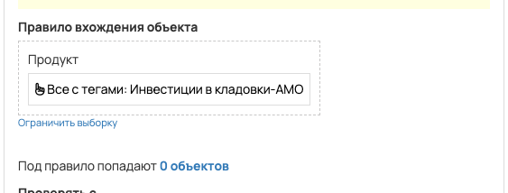
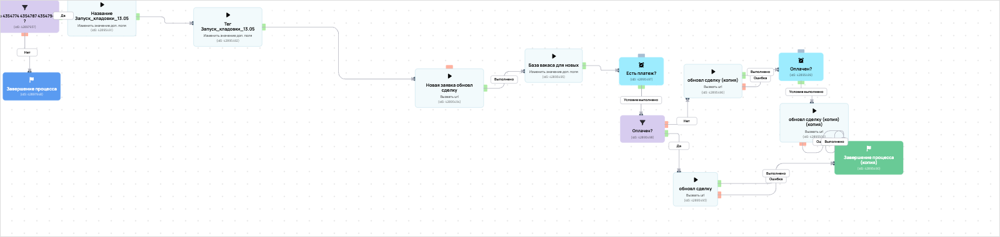

[AMO] [ED] Инвестиции в кладовки 100677
- ID процесса:
2463493 - Объект: Заказы
- Статус: Ожидание событий
Описание из GetCourse
11.05.2026 по задаче https://spi.bitrix24.ru/online/?IM_TASK=chat24416&IM_MESSAGE=2106380
https://vakas-tools.ru/account/base/amo.php?base_id=100677 - База
Инвестиции в кладовки. Тариф Минимум Продукт - https://investorpractic.getcourse.ru/pl/sales/product/update?id=4354774
Инвестиции в кладовки. Тариф Стандарт Продукт - https://investorpractic.getcourse.ru/pl/sales/product/update?id=4354787
Инвестиции в кладовки. Тариф Эксперт Продукт - https://investorpractic.getcourse.ru/pl/sales/product/update?id=4354794
Название: Запуск_кладовки_13.05 Тег: Запуск_кладовки_13.05
Воронка Инвестиции в Кладовки https://investorpractic.amocrm.ru/leads/pipeline/10900734
Новый заказ в гк - Этап Новый заказ ч/о в гк - Этап Новый заказ полная оплата в гк - Этап Новый заказ
15.05.2026 по задаче https://spi.bitrix24.ru/online/?IM_TASK=chat24416&IM_MESSAGE=2110132
Продукт - https://investorpractic.getcourse.ru/pl/sales/product/update?id=4359950#offer
Название: Заявка_ИВК_Запуск15.05 Тег: Заявка_ИВК_Запуск15.05
Воронка Инвестиции в Кладовки https://investorpractic.amocrm.ru/leads/pipeline/10900734 Этап: Активность
Понятное описание процесса
- Процесс работает с объектом GetCourse: Заказы. Текущий статус процесса: Ожидание событий.
- На вход попадают данные так: В процесс попадают заказы по продуктам с тегом «Инвестиции в кладовки-AMO».
- Техническое правило входа в GetCourse: Продукт (все с тегами: Инвестиции в кладовки-AMO)..
- Дополнительные условия внутри схемы не извлечены: процесс идет напрямую по основной ветке или условия не подписаны.
- Дальше процесс делает прямые вызовы Vakas: 2. Напрямую задействованы базы: 100677.
- Передача: 100677. Инвестиции в кладовки: Оплаты и заказы. Передаются параметры:
number,id,order_id,positions,costMoney,leftCostMoney,payedMoney,status,paymentLink,firstNameи другие. - Передача: 100677. Инвестиции в кладовки: Оплаты и заказы. Передаются параметры:
number,id,order_id,positions,costMoney,leftCostMoney,payedMoney,status,paymentLink,firstNameи другие. - Что происходит в amoCRM: На входе в этап Инвестиции в Кладовки -> НОВЫЙ ЗАКАЗ [85746150] база ищет дубль и может взять старую сделку только из заранее разрешенных этапов.
Ход процесса в GetCourse
- Схема состоит из 3 блоков и 2 переходов.
- По типам: стартов 1, условий/ожиданий 0, вызовов URL 0, изменений полей 0, финалов 0.
Блоки процесса: что делают и зачем нужны:
- Блок
1«Начало работы» (старт). Что делает: Запускает выполнение схемы для объекта, который попал под правило входа процесса. Зачем нужен: Нужен как точка входа: от него GetCourse начинает движение объекта по схеме. Дальше: если результат «Выполнено», идет в «обновл сделку»; если результат «Выполнено», идет в «Новая заявка обновл сделку». - Блок
2«обновл сделку» (операция request). Что делает: Выполняет служебный шаг схемы «обновл сделку». Зачем нужен: Нужен как промежуточный технический шаг в схеме «обновл сделку». Дальше переходов нет: это конечная точка ветки. - Блок
3«Новая заявка обновл сделку» (операция request). Что делает: Выполняет служебный шаг схемы «Новая заявка обновл сделку». Зачем нужен: Нужен как промежуточный технический шаг в схеме «Новая заявка обновл сделку». Дальше переходов нет: это конечная точка ветки.
Скриншоты процесса


Откуда: процесс берет объекты по правилу входа «Продукт (все с тегами: Инвестиции в кладовки-AMO).».
Что проверяет по пути: перед отправкой в база 100677 (Оплаты и заказы).
Куда ведет: вызывает внешний URL Vakas и передает данные в база 100677 (Оплаты и заказы).
Логика Vakas и amoCRM
- Условие входа в процесс: Продукт (все с тегами: Инвестиции в кладовки-AMO)..
- Вызовов Vakas в схеме:
2. Уникальных URL Vakas:2. Связанных баз:1.
Связанная база Vakas: 100677. Инвестиции в кладовки
- Использование в процессе: Оплаты и заказы
- Документация базы: 100677. Инвестиции в кладовки
- Страница настройки: Vakas
- Поиск дублей: Проверять на дубли
- Искать только в выбранных воронках: 14
- Ответственный по контакту имеет приоритет: Да
Вызовы из процесса
обновл сделку
- Endpoint:
payments - URL вызова:
https://vakas-tools.ru/base/payments/8927217/100677/?number={object.number}&id={object.user.id}&order_id={object.id}&positions={object.positions}&costMoney={object.cost_money}&leftCostMoney={object.left_cost_money}&payedMoney={object.payed_money}&status={object.status}&paymentLink={object.payment_link}&firstName={object.user.first_name}&lastName={object.user.last_name}&name={object.user.name}&email={object.user.email}&phone={object.user.phone}&manager_name={object.manager}&manager_email={object.manager_email}&manager_phone={object.manager_phone}&offers={object.offers}&avatarUrl={object.user.avatar_url}&utmS={object.user.create_session.utm_source}&utmM={object.user.create_session.utm_medium}&utmCa={object.user.create_session.utm_campaign}&utmCo={object.user.create_session.utm_content}&utmT={object.user.create_session.utm_term}&order_name_amo={object.order_name_amo}&order_price={cost_money_value}&pay_date={object.payed_at format="d.m.Y H:i"} - Связанная база Vakas: 100677. Инвестиции в кладовки
Когда срабатывает в процессе
- Сценарий 1:
Начало работы--Выполнено-->обновл сделку
Что уходит в Vakas
<details> <summary>Показать 27 параметров запроса</summary>
numberidorder_idpositionscostMoneyleftCostMoneypayedMoneystatuspaymentLinkfirstNamelastNamenameemailphonemanager_namemanager_emailmanager_phoneoffersavatarUrlutmSutmMutmCautmCoutmTorder_name_amoorder_pricepay_date
</details>
Как база обработает вызов и что будет в amoCRM
-
Логика создания сделки: сначала ищется существующая сделка/контакт по правилам базы; если подходящая сделка найдена, обновляется она, иначе создается новая.
-
Режим проверки дублей: Проверять на дубли
-
Искать дубль только в выбранных воронках: 14 шт.
-
Учитывать закрытые этапы при поиске дубля: нет
-
Добавлять телефон/email в найденный контакт: Да
-
Менять имя контакта при обновлении: Нет <details> <summary>Показать 14 воронок для поиска дублей</summary>
-
ОСНОВНОЙ ОТДЕЛ - ЗАЯВКИ [6777466] -
ПАССИВНЫЙ ДОХОД [9426954] -
КРИПТОКАПИТАЛ [9498394] -
ФИНАНСОВАЯ СВОБОДА [9498398] -
ОД [9839030] -
КРИПТОКЛУБ [9578374] -
ИНВЕСТ КЛУБ [9500418] -
ОТДЕЛ КЛУБОВ [6869966] -
АПСЕЙЛЫ ОП [8910882] -
ОТДЕЛ ДИАГНОСТИК [6844390] -
ЛИДОРУБЫ [9212986] -
ДИАГНОСТЫ [9213518] -
Распродажа 2025 [10411534] -
Инвестиции в Кладовки [10900734]
</details>
- Автоотправка оплат в amoCRM: Да
- Базовый этап для этого вызова: Инвестиции в Кладовки -> НОВЫЙ ЗАКАЗ [85746150]
- Новый заказ: Инвестиции в Кладовки -> НОВЫЙ ЗАКАЗ [85746150]
- Частичная оплата: Инвестиции в Кладовки -> НОВЫЙ ЗАКАЗ [85746150]
- Полная оплата: Инвестиции в Кладовки -> НОВЫЙ ЗАКАЗ [85746150]
- Поле amoCRM для суммы: оплачено[payedMoney]
- Двигать старые сделки только с выбранных этапов: Да
- Этапы, из которых разрешен сдвиг: 158 этапов
- Не менять этап при обновлении: Нет
- Менять название сделки при обновлении: Да
- Теги сделки: {#pay_field_deal_tag_1#}
- Ответственный по умолчанию: EasyDrafting[12985298]
- Индивидуальные правила маршрутизации: нет
Новая заявка обновл сделку
- Endpoint:
payments - URL вызова:
https://vakas-tools.ru/base/payments/8927217/100677/?number={object.number}&id={object.user.id}&order_id={object.id}&positions={object.positions}&costMoney={object.cost_money}&leftCostMoney={object.left_cost_money}&payedMoney={object.payed_money}&status={object.status}&paymentLink={object.payment_link}&firstName={object.user.first_name}&lastName={object.user.last_name}&name={object.user.name}&email={object.user.email}&phone={object.user.phone}&manager_name={object.manager}&manager_email={object.manager_email}&manager_phone={object.manager_phone}&offers={object.offers}&avatarUrl={object.user.avatar_url}&utmS={object.user.create_session.utm_source}&utmM={object.user.create_session.utm_medium}&utmCa={object.user.create_session.utm_campaign}&utmCo={object.user.create_session.utm_content}&utmT={object.user.create_session.utm_term}&p1=‘’&order_name_amo={object.order_name_amo}&deal_tag_1={object.deal_tag_1} - Связанная база Vakas: 100677. Инвестиции в кладовки
Когда срабатывает в процессе
- Сценарий 1:
Начало работы--Выполнено-->Новая заявка обновл сделку
Что уходит в Vakas
<details> <summary>Показать 27 параметров запроса</summary>
numberidorder_idpositionscostMoneyleftCostMoneypayedMoneystatuspaymentLinkfirstNamelastNamenameemailphonemanager_namemanager_emailmanager_phoneoffersavatarUrlutmSutmMutmCautmCoutmTp1order_name_amodeal_tag_1
</details>
Как база обработает вызов и что будет в amoCRM
-
Логика создания сделки: сначала ищется существующая сделка/контакт по правилам базы; если подходящая сделка найдена, обновляется она, иначе создается новая.
-
Режим проверки дублей: Проверять на дубли
-
Искать дубль только в выбранных воронках: 14 шт.
-
Учитывать закрытые этапы при поиске дубля: нет
-
Добавлять телефон/email в найденный контакт: Да
-
Менять имя контакта при обновлении: Нет <details> <summary>Показать 14 воронок для поиска дублей</summary>
-
ОСНОВНОЙ ОТДЕЛ - ЗАЯВКИ [6777466] -
ПАССИВНЫЙ ДОХОД [9426954] -
КРИПТОКАПИТАЛ [9498394] -
ФИНАНСОВАЯ СВОБОДА [9498398] -
ОД [9839030] -
КРИПТОКЛУБ [9578374] -
ИНВЕСТ КЛУБ [9500418] -
ОТДЕЛ КЛУБОВ [6869966] -
АПСЕЙЛЫ ОП [8910882] -
ОТДЕЛ ДИАГНОСТИК [6844390] -
ЛИДОРУБЫ [9212986] -
ДИАГНОСТЫ [9213518] -
Распродажа 2025 [10411534] -
Инвестиции в Кладовки [10900734]
</details>
- Автоотправка оплат в amoCRM: Да
- Базовый этап для этого вызова: Инвестиции в Кладовки -> НОВЫЙ ЗАКАЗ [85746150]
- Новый заказ: Инвестиции в Кладовки -> НОВЫЙ ЗАКАЗ [85746150]
- Частичная оплата: Инвестиции в Кладовки -> НОВЫЙ ЗАКАЗ [85746150]
- Полная оплата: Инвестиции в Кладовки -> НОВЫЙ ЗАКАЗ [85746150]
- Поле amoCRM для суммы: оплачено[payedMoney]
- Двигать старые сделки только с выбранных этапов: Да
- Этапы, из которых разрешен сдвиг: 158 этапов
- Не менять этап при обновлении: Нет
- Менять название сделки при обновлении: Да
- Теги сделки: {#pay_field_deal_tag_1#}
- Ответственный по умолчанию: EasyDrafting[12985298]
- Индивидуальные правила маршрутизации: нет